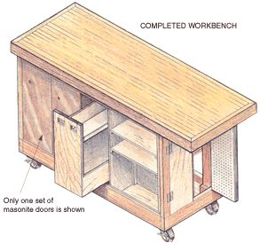
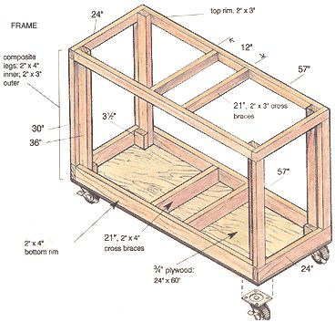
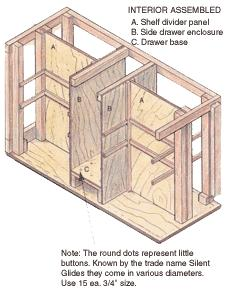
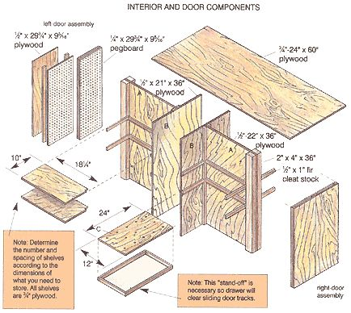
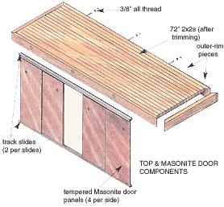
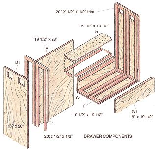
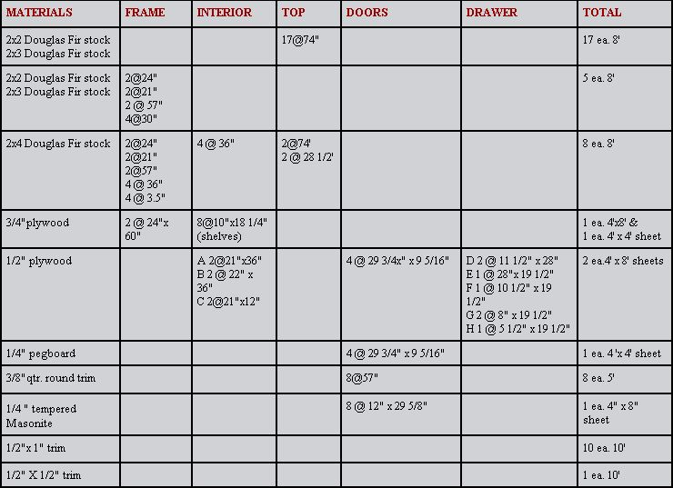

Begin by cutting all of the 2x4 and 2x3 frame pieces to length (see " Cutting List "). Cut the 3/4" plywood panel for the top and bottom to size (ideally, both panels should be exactly the same size). Set the top panel aside until after the interior is completely installed.
Tools Lists: 24" carpenter's square, jigsaw or skill saw (or handsaw), drill motor with a basic set of bits (or hand drill), screwdriver, four 6" C-clamps, hammer
Refer to the " Frame " illustration and lay the plywood bottom panel down flat. Position the two bottom, 21" cross braces 12" apart and ensure that they are 90° or perpendicular to the plywood edges. (Later, the side drawer enclosures will attach to the cross braces; see parts B in the illustrations ). If they're out of alignment, the drawer won't be able to slide in and out.) Next, temporarily screw a pair of 20" cleats to the bottom plywood panel on either side of both cross braces. Remove both cross braces and scribe a centerline in the now-visible cleat slots (to learn more about cleats see " A Note on Cleats "). Drill 1/8" holes on the centerline, 4" in from the left and right sides. These four holes will allow you to locate the centerline of the cross braces when you are screwing them in place from the underside up. The temporary cleats will hold the cross braces in position.
Next, glue the rim pieces and the cross braces to the plywood. Lay out the 2x4 rim pieces and cross braces in position on a flat surface, apply glue and place the plywood bottom on top of the rim assembly, engaging the cross braces in their temporary cleat slots. Using nails, secure the plywood to the 2x4s. (Note: the plywood can act as a "guide" for squareness. Before nailing, run some self-tapping drywall screws through the plywood into the 2x4s.)
Now you can flip the assembly over, put it on sawhorses and, using lag bolts, secure the rim sides to the four corners of the bottom rim with drywall screws (don't forget the glue). Next, secure the cross braces to the rim sides (make sure they are not crooked) and remove the temporary cleats. Make it a habit to always wipe up excess glue as soon as possible; bumps of dried glue will inhibit proper fits later.
Next, refer to the cutting list and cut the necessary wood for the four 2x3, 30" leg assemblies. Using the four corners and the side rim structure as a positioning guide and brace, glue and screw the legs in place. This is where your C-clamps will pay for themselves. You may have to use some temporary bracing to ensure squareness.
To finish the frame, glue and screw the top rim pieces to the composite legs (the lengths of the top rim pieces should match those of the bottom rim). However, don't put the cross braces on. First, you need to give the frame some sheer strength by installing two of the interior pieces.
Cut the two side drawer enclosure panels from 1/2" plywood (see parts B in the illustration ). Glue and screw the 2x3 top cross braces to the tops of these panels, slide the panels in place in the frame assembly and secure them. Ensure that the panels are squared up before you glue and screw them to the bottom rim cross braces. To double-check your progress, measure the distance across the bottom of the opening and the top of the opening on both sides.
N ow this structure will be pretty rigid and strong, which is one of the reasons for using 1/2" plywood for the four interior panels (see parts A and B in the illustration ). They function as sheer panels, dividers, and as a structure upon which to hang shelves.
Lay the structure on its side. Seal and paint the bottom, then lag bolt the four castors on. With the castors on and in their locked position, you may now return the structure to its fixed and upright position. Refer to the illustrations and, using cleat stock, plywood, pegboard and a few 2x4s, construct the remainder of the interior.
There are two doors on either end of the bench. The outer skins are 1/2" plywood (you could use 1/4" mahogany-, ash- or oakfaced plywood and varnish). The inner skins are 1/4" peg board. The 1 x 1/2" spacers (cleat stock material) are necessary if you use "off-the-shelf' peg board hooks, or you could skip the spacers and peg board and simply put in a series of screws or nails. The doors should be hung with two 2" hinges per door. Mount a door pull of choice or bore a finger hole.
The sliding doors that flank the pullout drawer are designed to be 1/4"-tempered masonite panels that run in a pair of plastic tracks, one on the top and one on the bottom (see the " Top & Masonite Door Components " illustration). Follow the manufacturer's mounting instructions supplied with the track kit. Once again, you could substitute 1/4" oak, ash or mahogany panels for the Masonite ones. Assemble the pullout drawer (according to the " Drawer Components " illustration) and be sure to cut two square holes in the plywood to use as handles.
If your interior is complete, you can attach the plywood top with screws and glue. It serves as a structural subsurface, to which the finished top is attached (see illustration ). Also, the top has been measured to overhang the rest of the workbench to facilitate easy attachment of a vice.
Cut the 2x2s to the required length (there will be two extra inches for trimming). For strength, you'll want to join all of the 2x2s together using glue and three 3' lengths of 3/8" all thread (with their accompanying nuts and washers). Make a master boring guide by boring 1/2" holes in one of the 2x2s (we recommend using Brad Point wood bits). Try to keep the bore exactly level.
By marking the center on both sides of the 2x2, you'll be able to see how accurate your bore is when the bit comes out the other side (too high, too low, too far left or too far right). Affix the C-clamp to the guide and another 2x2 and bore away; the "good" holes will guide the drill bit, giving you consistent results. Bore all of the remaining 2x2s.
To line up the holes of the outer rim pieces with those of the 2x2, use your master boring guide to mark the outer rim pieces (clamp the guide to the top of each rim piece). Remove the guide. If you want a recessed hole for the washer and nut of the all thread use a 1" spade bit to bore 3/4" into the side of the 2x4 rim piece. (If you don't have a 1" spade bit use a wood chisel and make a square recessed hole.) Then use your 1/2" bit and bore all the way through.
When you're done, run three lengths of all thread through one of the 2x4 outer-rim pieces and put on its nuts and washers. With the threaded rods sticking up apply glue to the upside of the 2x4 and slide on the first bored 2x2. Continue this process until all of the 2x2s are in place. Slide on the remaining outer-rim 2x4. Note that the 1/2" hole and 3/8" rod give you a 1/8" tolerance for adjustment. With the top upside down, take a hammer and tap the 2x2s until the whole surface is uniformly flat. Next, tap fore and aft to get the ends as square as possible. Gradually tighten all of the nuts using uniform pressure - take up a bit, tap a bit until the whole thing is compressed. Scrape off all excess glue and move the top into its final position on top of the plywood subsurface. From inside the cabinet, run four screws through the 3/4" plywood and into the 2x2s but do not use glue. This will allow you to remove the top later if you want to. Finally, saw both ends of the bench top off square, remove excess material and bolt on the end pieces. After the glue has dried, sand flat. Good luck, have fun and see you next time!
A Note on Cleats Cleats are MOTHER's answer to joining two surfaces together instead of using biscuit cutters, dado blades and mortis joints. Put on all cleats for the shelves using screws so you can change the space opening as needed in the future. Also, don't glue the shelf to the cleats. Instead, screw the shelf to the cleats only on the outer edge. And don't install a pair of cleats at the same time and try to slip a panel between them. If the space is a little too tight the panel won't go in, and if the space is a little too wide you won't get a good glue bond.
The dimension and placement of interior cleats are not given in this project because the interior arrangement shown is only a suggestion. You can move the interior panels around to suit your particular needs, which will be dictated by the size of the equipment you wish to store. For example, the shelf divider panels could actually move left or right of center to create a wider shelf. Alternately, you could leave panel A in the center and simply cut a hole in it so you could use the shelf on both sides.
Related info: To shave minutes off your projects, make Mother's Belt Sander.
|
 Completed workbench |
 Frame |
 Interior assembled |
|
 Interior and Door Components Once the interior is assembled (see "" Interior Assembled "" illustration), you can put together the door and drawer components (see "" Interior & Door Components "" and "" Drawer Components "" ). |
 Top and masonite door components The finished top attaches to the plywood subsurface and has overhang for clamping. |
 Drawer components |
|
 Material Cutting List |
|
|